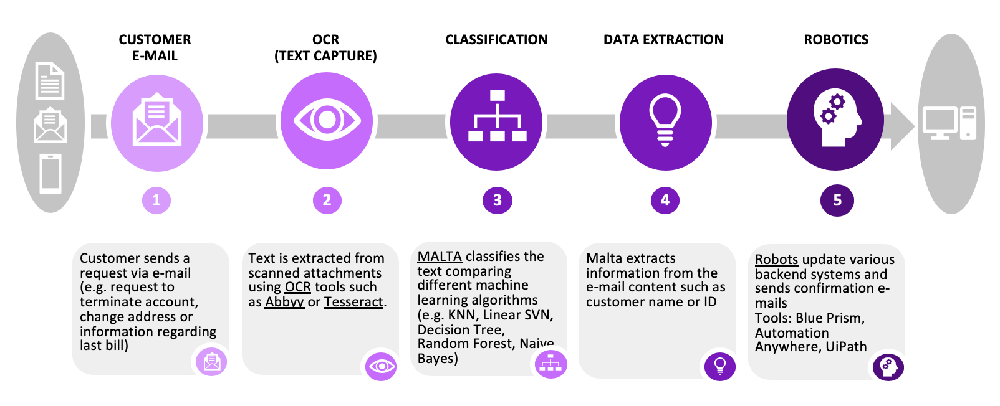

Mengchen's IT Project at Accenture
Mar 20, 2019 00:00 · 261 words · 2 minute read
Background
Upon the graduation from Binghamton University in December 2018, I came back to China and joined Accenture's IT consulting Service in Beijing. Processing academic experiences in management information system, I looked forward to sovle some real world issues with the help of emerging technologies.
I worked on a team that provides human-centered automation solutions such as Robotic Process Automation to big companies. As a junior analyst, I am responsbible for the analysis of the business requirements and design feasible improvement and implementation plans. My IT consulting career at Accenture has shown me how the emerging technologies such as AI has merged into daily operations solvie real world issues.
Indeed I am proud of my time in Accenture and, given opportunity, could say much more. But due to the strict policies of data privacy and pledge of confidentiality, I could only briefly present one project I worked on here.
The automation process of email customer service
Business Requirements
The Customer Service team of a major company's finance department in the auto industry receives thousands emails everyday, which are mainly business requests such as change of account information. It takes 5 operators 80 hours in total per week to process thos emails, operate in the backend system and give feedbacks. After we performed analysis, we found it a repeated processes and the whole process could be automated
IT Solutions

My contributions
I performed the business analysis of the business process and redesign the work-flow. I suggested the use of OCR in the extraction of data and machine learning in the data classification.